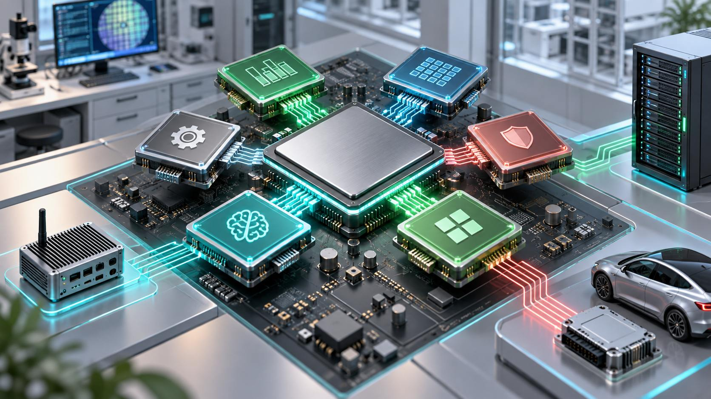

What Is RISC-V? How the Open Chip Architecture Differs from ARM and x86
RISC‑V is an open-standard Instruction Set Architecture (ISA) based on RISC principles. It defines the language software uses to communicate with a processor: instructions, registers, privilege modes, and extensions. RISC‑V is not one CPU design, a chip manufacturer, or a promise that every related implementation is open source.
Where does an ISA fit?
An ISA is the contract between software and hardware. A compiler produces ISA instructions; a processor implementation executes them. Two RISC‑V chips may have very different pipelines, caches, cores, accelerators, power, and performance while running compatible software when they share the required profile and platform contracts.
Microarchitecture is how a designer implements the ISA. Comparing RISC‑V with a particular CPU model using architecture names alone is like estimating two vehicles' speed from their fuel type.
What does “open” mean in RISC‑V?
The ISA specification and ratified extensions are public, royalty-free, and governed by RISC‑V International. Organizations can build cores, SoCs, and tools without purchasing traditional ISA-use rights.
A RISC‑V implementation may still:
- Use an open-source core or closed commercial IP.
- Contain proprietary accelerators and extensions.
- Use licensed manufacturing processes and libraries.
- Depend on non-open firmware, drivers, or tools.
RISC‑V is open at the ISA specification layer; the openness of a final product depends on its vendor.
Modularity: a small base plus extensions
A RISC‑V ISA begins with an integer base such as RV32I or RV64I. Standard extensions add required capabilities:
- M: integer multiplication and division.
- A: atomic instructions for multicore synchronization.
- F/D: single and double-precision floating point.
- C: compressed instructions for smaller code.
- V: vector operations for data parallelism.
A small embedded device can select a minimal set, while a Linux application processor requires much more. Custom encoding space supports specialized instructions without colliding with regions reserved for standards.
Profiles address software fragmentation
Modularity creates freedom but also many extension combinations. If every chip selects a different set, operating systems and binaries lack a common target. RISC‑V Profiles combine a base with mandatory and optional extensions into standard configurations.
RVA23 targets 64-bit application processors, allowing software to rely on guaranteed features instead of probing many small extensions. Profiles do not prohibit custom designs; they create a baseline for binary portability and toolchains.
How does RISC‑V differ from ARM and x86?
| Aspect | RISC‑V | ARM | x86 |
|---|---|---|---|
| ISA model | Open, modular standard | Commercially licensed ISA/IP | Commercial ISA concentrated among few vendors |
| Customization | Standard extensions and custom space | Depends on IP/license and SoC design | Limited access for third-party compatible CPUs |
| Desktop/server ecosystem | Developing | Strong and growing | Highly mature |
| Embedded ecosystem | From tiny cores to SoCs | Highly mature | Not the primary focus |
RISC versus CISC does not by itself determine modern chip performance or efficiency. Decode, branch prediction, cache, out-of-order execution, memory controllers, accelerators, manufacturing, and software optimization all matter.
Why do organizations care?
- Design control: select extensions and build workload-specific accelerators.
- Less ISA-layer dependency: avoid relying on one architecture licensor.
- Shared investment: compilers, operating systems, and tools target common standards.
- Specialization: optimize IoT, storage, automotive, security, and AI datapaths.
- Education and research: open specifications support learning and experimentation.
A royalty-free ISA does not make chip development free. Verification, physical design, tape-out, fabrication, firmware, compliance, and software support remain expensive.
Where is RISC‑V used?
Early adoption is prominent in microcontrollers, embedded cores, and controllers inside storage, networking, and SoCs, where customization, footprint, and control provide clear value.
Linux application processors, development boards, accelerators, and servers are also advancing. “Runs Linux” does not immediately make a platform a drop-in x86 or ARM PC replacement: stable firmware, GPU/NPU drivers, power management, multimedia, native applications, and update processes are required.
The software ecosystem matters more than instructions alone
A usable platform needs compilers, debuggers, kernels, bootloaders, firmware, ABIs, package repositories, drivers, and documentation. GCC, LLVM, Linux, and major projects support RISC‑V, but maturity varies by profile, board, and vendor.
Before selecting a product, verify:
- Supported ISA string and profile.
- Official distribution image versus community builds.
- Mainline drivers for networking, storage, display, and accelerators.
- Boot firmware, secure boot, updates, and support lifecycle.
- Toolchain, profiler, debugger, and CI availability.
- Native versions of required binaries or the cost of emulation.
Security: an open ISA is not automatically secure
A public specification enables review, but vulnerabilities can exist in microarchitecture, cache, speculation, firmware, debug interfaces, drivers, supply chains, or custom extensions. Products still need threat modeling, secure boot, roots of trust, isolation, signed updates, and disclosure processes.
Custom instructions may accelerate workloads while increasing audit and portability costs. Prefer ratified standard extensions where possible and customize only with a toolchain, verification, virtualization, and maintenance plan.
Main challenges
- Extension and platform combinations can fragment software.
- Driver and firmware maturity varies among boards.
- Products perform very differently despite the same RISC‑V label.
- Closed or binary-only software may lack RISC‑V builds.
- Custom extensions reduce portability to other hardware.
- Some markets lack verification, compiler, and system-software expertise.
Profiles, specification ratification, and upstream support are essential for narrowing these gaps.
When is RISC‑V a good fit?
It fits specialized SoCs, organizations seeking roadmap control, teams capable of hardware/software co-design, high-volume embedded products, education, and research.
Use caution when a project relies on closed binaries, specialized drivers, platform certification, or extremely short time-to-market without experienced staff. A mature ARM or x86 platform may reduce overall risk even if its ISA is less open.
Common misconceptions
- “RISC‑V is a free chip”: the ISA is open; designing and making chips still costs money.
- “Every RISC‑V chip is open source”: implementations may be proprietary.
- “RISC‑V is always faster or more efficient”: that depends on implementation and technology.
- “RISC‑V software runs on every RISC‑V chip”: extensions, profiles, ABIs, and platforms matter.
- “RISC‑V will immediately replace ARM and x86”: several ISAs can coexist across workloads.
Conclusion
RISC‑V changes the foundation of chip development through an open, modular ISA that many parties can build upon. Its value is choice and specialization, not a guarantee that every chip is cheaper or faster. A successful RISC‑V product still depends on silicon design, compatible profiles, toolchains, operating systems, drivers, and long-term support.